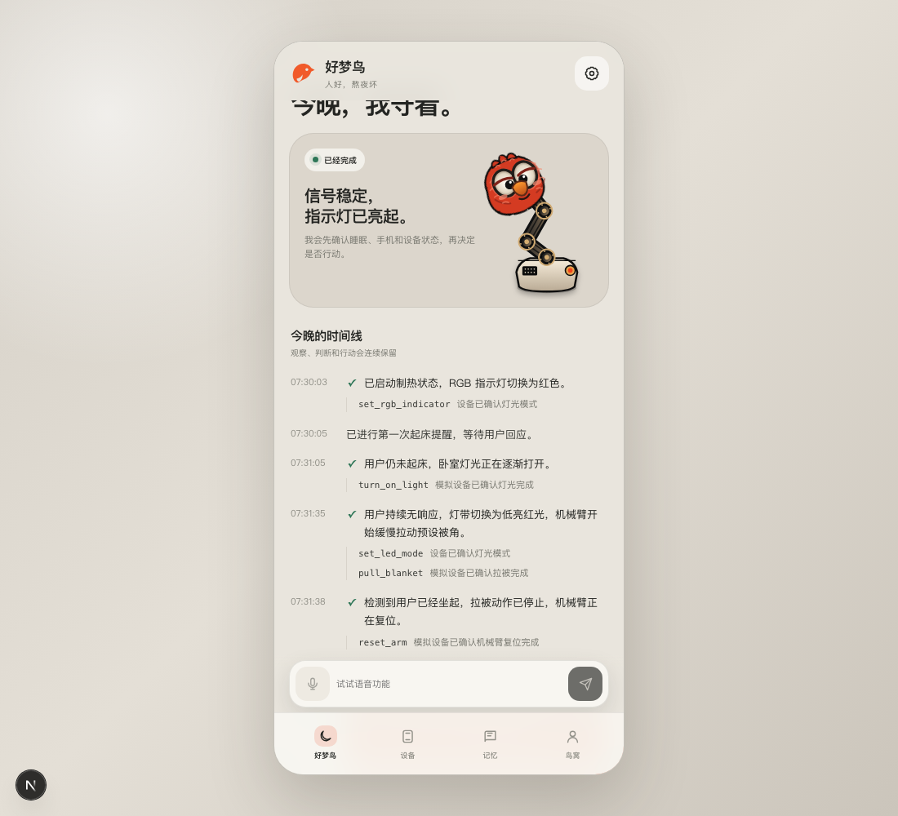
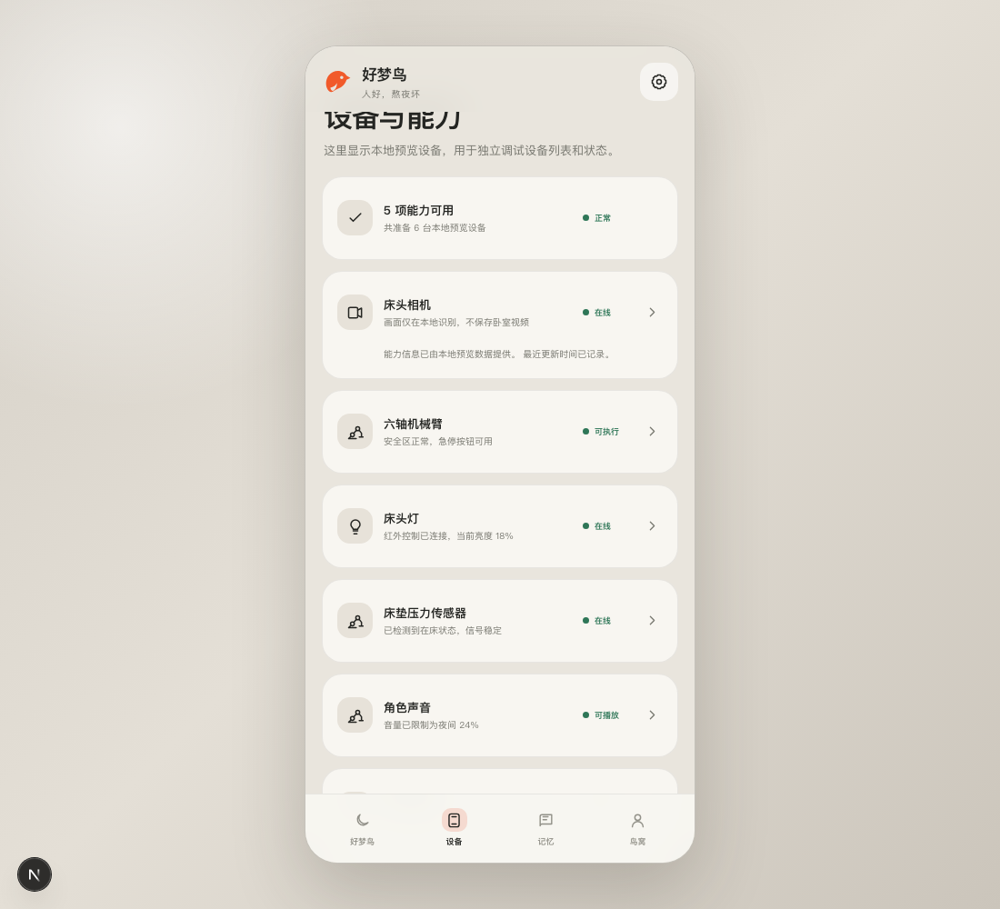
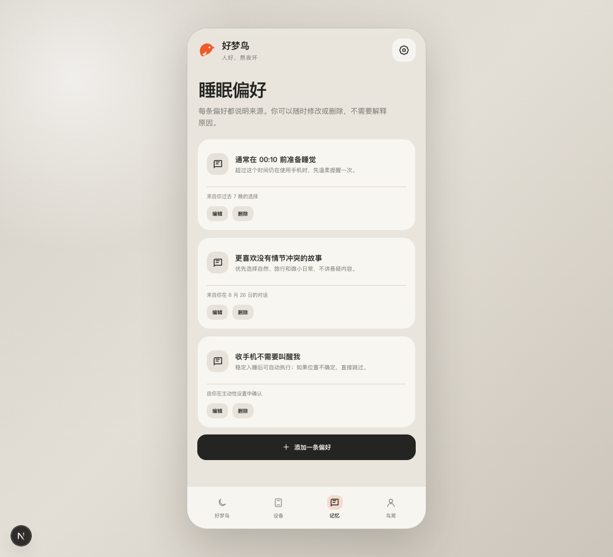
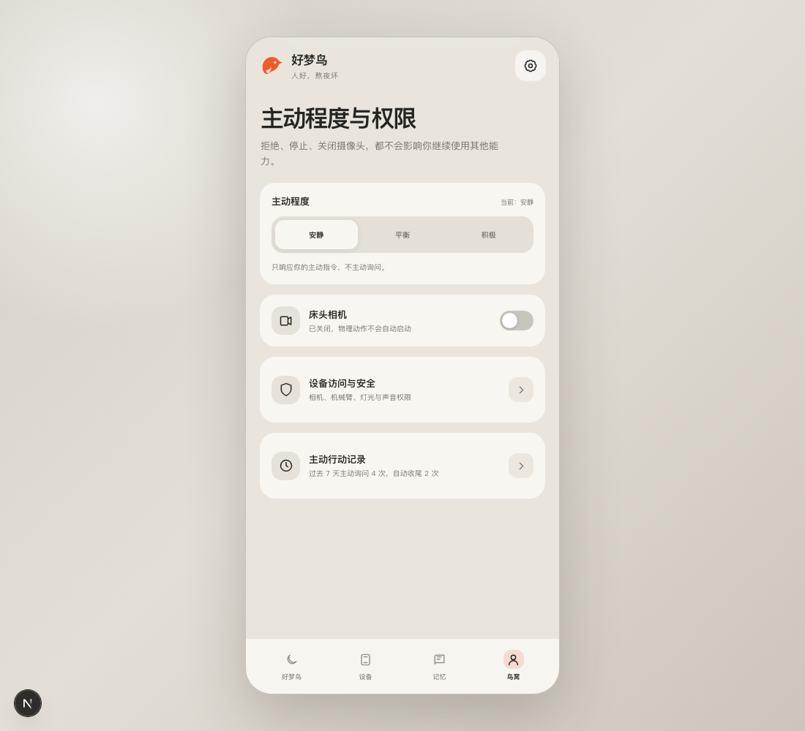

ACompanion home: make the current state clear
The character, status label, and short explanation translate waiting, preparation, execution, and completion into companion language. Bottom navigation separates Tonight, Devices, Memory, and Nest.

 中文
中文02 / EMBODIED AGENT
Connect app interactions, agent decisions, and a six-axis robotic arm across five care scenarios from bedtime to morning.
Overview
Goodnight Bird explores an embodied sleep agent: software that can take physical care actions through a device and bring the execution result back into the product.

The Problem
Sleep apps can remind people, but cannot take physical action for them.
Interaction & Design
I led positioning and the PRD, planned five sleep-care scenarios, designed the app interactions, five character states, and product identity, and helped drive software–hardware integration. The following pages show the interaction design.
The project uses a single mobile interface. These original-proportion captures are arranged in workflow order; click to view the full screenshots.
The character, status label, and short explanation translate waiting, preparation, execution, and completion into companion language. Bottom navigation separates Tonight, Devices, Memory, and Nest.
The repository’s built-in gradual wake-up scenario streams observations, conditions, safety checks, plans, and tool feedback to the frontend. Process and outcome remain in one timeline.


The list shows each device and its availability first; an arrow reveals capability details. Available, offline, and unreleased states are distinct, so a visible feature does not imply execution readiness.

Each preference includes its source and controls to edit, delete, or add information, so users can correct the system’s understanding.

The capture switches to Quiet mode and turns the camera off. Mode labels, explanatory copy, and switch state update together. Initiative and device permissions remain independent choices.

The System
If a safety check fails, stop and report it. Device feedback returns to sensing, closing the loop.
Outcomes
Integrated a six-axis arm, MQTT, and sensors into a working demo with physical execution and device feedback.